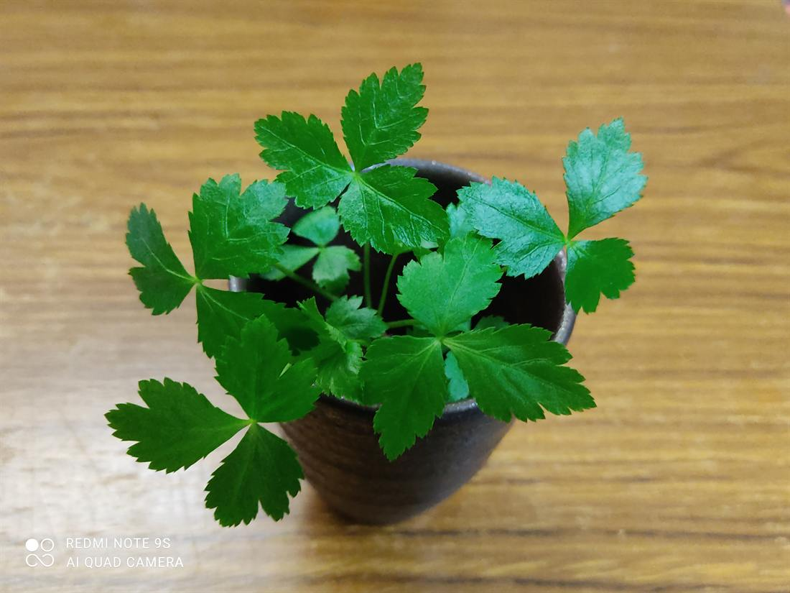

ミツバ
Cryptotaenia japonica Hassk.
別名 · ミツバゼリ／野蜀葵
セリ科 · Apiaceae（ミツバ属）
思い出の一鉢後輩の栽培キットから · 花まで咲いた今は育てていない — いつかまた
学名の由来
- Cryptotaenia（クリプトタエニア）＝ギリシャ語「kryptos（隠れた）」＋「tainia（帯・リボン）」で「隠れた帯」。花の付属物が目立たないことにちなむとされる。
- japonica（ヤポニカ）＝「日本の」。日本を含む東アジア原産にちなむ。
この植物のこと
- セリ科ミツバ属の多年草。日本原産の数少ない野菜のひとつ。葉が3枚に分かれる（三出複葉）ので「三つ葉」。
- さわやかで鼻に抜ける独特の香りがあり、薬味・吸い物・茶碗蒸し・親子丼などに。加熱しすぎず、仕上げにのせて香りを楽しむ“大人の味”。
- 半日陰・冷涼を好む（強い日ざし・高温・乾燥が苦手）。切ってもまた新芽が出るので、くり返し収穫できる。
- 花は白い小さな花が散形状につく（セリ科らしい花序）。トウ立ちすると葉が硬くなる。
- セリ科なので、セリ・パセリ・ニンジン・セロリ・パクチーの仲間。※野生のセリ科には有毒種（ドクゼリ等）もあるので素人採取は注意（栽培品は安心）。
育て方のポイント（半日陰・冷涼を好む香味野菜）
- ☀ 光
- 半日陰でよく育つ（むしろ強い直射・高温が苦手）。夏は明るい日陰に。
- 💧 水やり
- 乾燥を嫌う。表土が乾いたらたっぷり（夏の晴天は朝夕）。株元をワラ等で覆うと乾燥防止に。
- 🌡 温度
- 冷涼を好む（生育適温15〜20℃）。高温が苦手。
- 🪴 土
- 土を選ばず丈夫。水はけが悪くても育つ。堆肥入りの野菜用培養土でOK。
- 🌱 肥料
- 生育中に緩効性肥料か薄い液肥をときどき。
- ✂ 収穫
- 草丈15〜20cmで根元2〜3cmを残して切る→また出てくり返し収穫。トウ立ち後は葉が硬くなる。
※園芸情報をもとにした目安。うちの環境を見ながら調整しよう。半日陰・湿り気味・涼しめが好き。